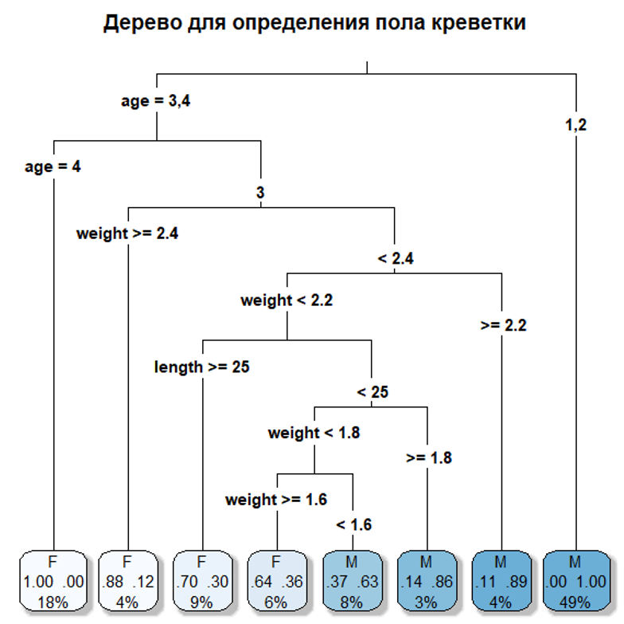

flowchart TD
A["Длина креветки больше 25 мм?"] -->|Да| B["Вес больше 2.5 грамм?"]
A -->|Нет| C["САМЕЦ 85%"]
B -->|Да| D["ВЕРОЯТНО САМКА 90%"]
B -->|Нет| E["Возраст 4 года?"]
E -->|Да| F["САМКА 70%"]
E -->|Нет| G["САМЕЦ 60%"]
34 Случайный лес - Random Forest
“Если нейронные сети — это оркестр, играющий сложную симфонию, то Random Forest — это слаженный хор, где каждый голос может быть прост, но вместе они рождают удивительную гармонию”.
Random Forest (случайный лес) — это ансамблевый алгоритм машинного обучения, который строит множество решающих деревьев и объединяет их предсказания. В экологии он особенно ценен для работы с “шумными” полевыми данными, где переменные часто коррелируют, а распределения далеки от нормальности.
Биологическая интуиция: Представьте, что вы пытаетесь определить, самка перед вами или самец, но не можете посмотреть прямо на половые признаки креветки. У вас есть только следующие признаки: длина, вес, возраст.
📖 Ваш полевой определитель будет выглядеть так:
Этот полевой определитель — прекрасный пример одного решающего дерева, который прост для понимания: мы задаем последовательные вопросы и движемся по ветвям, пока не придем к выводу (листьям). Однако у такого подхода есть серьезные недостатки, которые ограничивают его надежность. Главная проблема — это хрупкость: если мы ошибемся всего в одном вопросе, например, когда креветка длиной 24 мм оказывается чуть ниже порогового значения, мы можем пойти по совершенно неверной ветке и получить совершенно неправильный ответ. Другая проблема — переобучение: такое дерево могло быть построено на основе небольшой выборки креветок из одного пруда (района), и оно фактически “запомнило” шумы и специфику этих данных, но будет плохо работать на креветках из другого водоема, то есть не сможет обобщать закономерности.
А теперь представьте, что у вас не один, а сотни таких определителей, и каждый из них — это специалист в своей области. Один эксперт считает самым важным признаком длину, другой эксперт больше доверяет соотношению веса и возраста, а третий обращает внимание на второстепенные признаки, которые другие игнорируют. Случайный Лес — это и есть совет таких экспертов, коллективное принятие решений. Как же “растет” этот лес? Во-первых, благодаря разным “точкам зрения” через бутстрэп выборки: каждое дерево в лесу обучается не на всей выборке данных, а на ее случайном подмножестве, как если бы каждый эксперт-биолог изучал свою, случайно собранную выборку (навеску) креветок, что гарантирует разнообразие деревьев. Во-вторых, благодаря разным “вопросам” через случайный выбор признаков: при построении каждого узла дерева алгоритм рассматривает для разделения данных не все переменные, а лишь их случайное подмножество, что заставляет деревья искать разные, иногда неочевидные закономерности — одно дерево может разделить креветок по весу, другое по возрасту, третье по их комбинации.
Когда лес принимает решение, происходит настоящее голосование: когда в лес “приходит” новая креветка с неизвестным полом, она проходит через каждое из сотен деревьев. Если 75% деревьев кричат «САМКА!», а 25% говорят: «САМЕЦ!», алгоритм выбирает тот класс, за который проголосовало большинство, и в этом случае итоговый вердикт — САМКА. Именно этот подход обеспечивает удивительную эффективность Random Forest в экологических исследованиях. Он обладает устойчивостью к шуму: если в данных есть ошибки измерений, например, одна креветка была взвешена неверно, это собьет с толку лишь несколько деревьев, но не весь лес — как хор не сорвется, если один певец фальшивит. Лес прекрасно работает с нелинейностью и корреляциями, ему не важно, нормально распределены данные или нет, и как признаки связаны между собой, поскольку он сам найдет эти сложные взаимосвязи. Кроме того, после обучения мы можем измерить важность признаков, спросив у леса, какой признак был самым важным для определения пола — алгоритм подсчитает, насколько каждый признак уменьшал неопределенность в прогнозах, и возможно, окажется, что вес важнее длины, что может стать ценным открытием для биолога.
Таким образом, если нейросеть — это сложный оркестр, требующий тонкой настройки и большого количества “партитур” в виде данных, то Случайный Лес — это действительно слаженный хор, где каждый голос в виде отдельного дерева может быть прост и даже неидеален, но их коллективная мудрость и демократическое голосование рождают удивительно надежный и мощный прогноз, идеально подходящий для хаотичного мира живой природы.
Давайте разберем этот обучающий скрипт для практического занятия. Мы начинаем с того, что загружаем данные напрямую с GitHub — это данные по морфометрии креветок из первого практического занятия «Анализ и визуализация данных улова». Файл содержит измерения длины, веса, возраста и пола различных особей. Сразу после загрузки мы проводим небольшую предобработку: убираем два подозрительных образца с id 10 и 50, которые могли быть ошибками измерений, и преобразуем категориальные переменные — пол и возраст — в факторы, что необходимо для корректной работы алгоритмов.
Первая часть скрипта посвящена построению одиночного дерева решений для определения пола креветки. Это наглядная биологическая аналогия полевого определителя: алгоритм последовательно задает вопросы о длине, весе и возрасте, двигаясь по ветвям дерева до конечного вывода. Мы визуализируем это дерево и смотрим важность признаков — все три показателя оказываются примерно равнозначными для разделения самцов и самок.

Однако одно дерево может быть неустойчивым, поэтому мы переходим к ансамблю, т.е. к собственно случайному лесу. Сначала разделяем данные на обучающую и тестовую выборки в соотношении 70/30, чтобы объективно оценивать качество моделей. Затем строим лес из 500 деревьев для предсказания длины креветки (это задача регрессии). Модель показывает прекрасные результаты — она объясняет 95.63% вариации в длине, что свидетельствует о ее высокой предсказательной силе (predictive power).
Далее мы сравниваем Random Forest с классической линейной регрессией — и здесь возникает интересный момент. На тестовой выборке линейная модель демонстрирует немного лучшие показатели: RMSE 0.93 против 0.98 у Random Forest, и R² 0.974 против 0.971. Это кажется парадоксальным, но имеет логичное объяснение. Проблема заключается в природе наших данных и самой задачи. Связь между весом, возрастом, полом и длиной креветки, судя по всему, является преимущественно линейной — тяжелее и старше креветка, тем она длиннее. В таких условиях простая линейная модель, которая предполагает именно линейные зависимости, работает оптимально. Random Forest, будучи более гибким алгоритмом, может улавливать сложные нелинейные зависимости, но если этих зависимостей нет или они минимальны, модель может “переусложнять” решение, что и приводит к несколько худшим результатам на тестовых данных.
В заключительной части мы применяем Random Forest для классификации — определения пола креветки. Здесь модель показывает точность 82%, что является хорошим результатом для биологических данных. Матрица ошибок демонстрирует, что модель лучше определяет самцов (86% точности), чем самок (75% точности). Важность признаков для классификации показывает, что длина и вес являются наиболее информативными показателями для различия полов.
Таким образом, скрипт наглядно демонстрирует важный принцип машинного обучения: самая сложная модель не всегда является лучшей. Выбор алгоритма должен определяться природой данных и конкретной задачей. Для линейных зависимостей простые методы часто оказываются более эффективными и интерпретируемыми, в то время как для сложных нелинейных взаимосвязей Random Forest и другие ансамблевые методы демонстрируют свое превосходство.